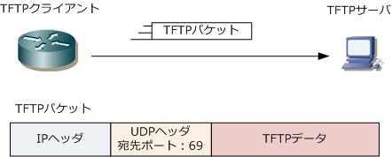
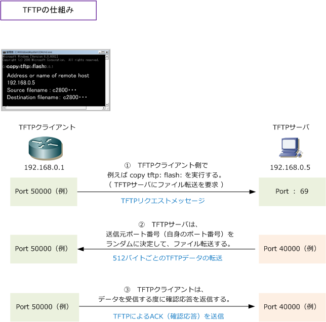

TFTP
TFTPとは
TFTP（Trivial File Transfer Protocol) とは、特定のコンピュータ間でファイル転送する時に使用する アプリケーション層プロトコル。FTPとの違いは大きく2つあります。1つは、FTPのようにユーザ名と パスワード認証が行われない点、もう1つはFTPはTCP上で動作する信頼性のある通信ですが、TFTPでは UDP上で動作しており信頼性よりも転送効率を重視しているという点です。TFTPはルータなどのソフト をアップロードやダウンロード時によく使用されます。TFTPではデータは512バイトずつ区切り送受信。
TFTPのパケット
TFTPクライアントがTFTPサーバにアクセスする際、宛先ポート番号としてUDPのポート番号 69 を使用。 ただし宛先ポート 69 を使用するのは、TFTPクライアントからTFTPサーバへの最初のリクエスト時だけ であり、以降のTFTPクライアントとサーバとの通信ではTFTPサーバはランダムなポート番号を使用します。

TFTPプロトコルをNWエンジニアが使用する時はルータをTFTPクライアント、PCをTFTPサーバとして ルータのIOSソフトウェアをアップロード、またはダウンロードする際に使用するケースがほとんどです。
TFTPの仕組み
CiscoルータをTFTPクライアント、PCをTFTPサーバとします。先ず、Ciscoルータにtelnet接続、または コンソール接続します。次に、TFTPサーバにIOSソフトのダウンロードを要求するためのコマンドを実行。 その際、TFTPクライアントからサーバに宛先ポート番号69宛のTFTPリクエストメッセージが送信されます。 TFTPサーバは要求されたファイルを転送します。この時、TFTPサーバは送信元ポート番号に69を使用する のではなくランダムなポート番号を使用します。ポート番号に69を使用するのは最初の「要求」時だけです。

TFTPサーバはファイルを512バイト毎に分割して送信していきます。分割データには１から順にシーケンス の番号が割り振られて送信されます。そのデータを受信したTFTPクライアントは確認応答（ACK）を返信。 TFTPはUDP上で動作することから、UDPが確認応答するではなくアプリケーション層プロトコルのTFTPが 確認応答を行います。最終的に512バイト未満のデータを受信するとファイル転送が終了した事を認識します。
← telnet / SSHとは SNMPとは →